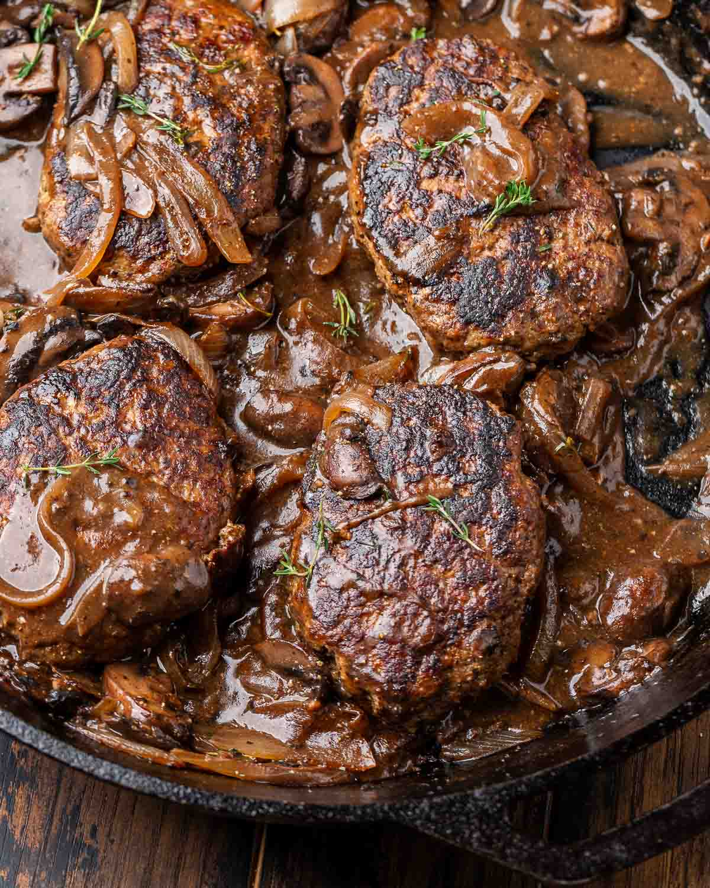

back to home
Salisbury Steak

Description
Not a particularly common meal in my house, but a good choice
when I'd like to make some gravy, which is the thing that really
makes this dish something special.
This meal is a great way to use up any left over raw burger
patties or any extra ground beef you might have, that you might
not otherwise know what to do with.
Recipe
Ingredients
- More than a third pound of beef, or at least one burger patty
- A couple tablespoons of flour
- A box of beef stock
Be prepared to use more that a two cups per pound
- 1-2 onions
- not more than carton of mushrooms
- onion powder
- garlic powder
- salt
- pepper
Instructions
- Preheat pan
You want the pan to be hot in order to get a good seer.
- While the pan preheats, form and season your meat
If you have preformed burger patties, you may leave all
your seasonings on the outside of patty. However, if you
have a block or chub of ground beef, feel free to mix
your seasonings into the meat. If you are forming your
meat, simply form it the same way you would a burger. If
you want to, you may pinch and prod the patty to be more
elongated and steak like.
- Seer your meat
Lightly oil the pan and place in your meat. You simply want
to get a sear on outside of your patties. We'll finish
cooking the meat at a later step.
- Cut onions and mushrooms
Juliene your onions, and slice your mushrooms
- Remove meat, turn down heat and place in veggies
Once the meat is removed, place in a spot of oil to help keep
your vegetables from sticking. Don't worry about any fond in
the bottom of the pan. Onions are quite excelent at deglazing.
Cook your mushrooms and onions until the onions have taken a
slightly golden color. They won't be fully caramalized at this
point, but they'll continue cookig while you make the gravy.
- Begin making the gravy
Making the gravy is quite simple. Simply pour a quarter cup
of beef stock at a time and let it reduce by half. There's
no starch in any of the ingredients, so the gravy will not
get thick on it's own. You can add a heavy pinch of flour at
any time to make the sauce thicker. The more stock you put
into the gravy, the stronger it will taste. If you end up
with more gravy than you'd like to use, you can simply
reduce what you have until the volume matches what you
desire.
- Put patties back into the gravy
Cook until you've reached desired doneness. For a half pound
burger, 8 minutes per side should be sufficent.
- Serve
Plate the patty first, and pour the gravy over the top
I would recommend serving with a side of potato.
back to home